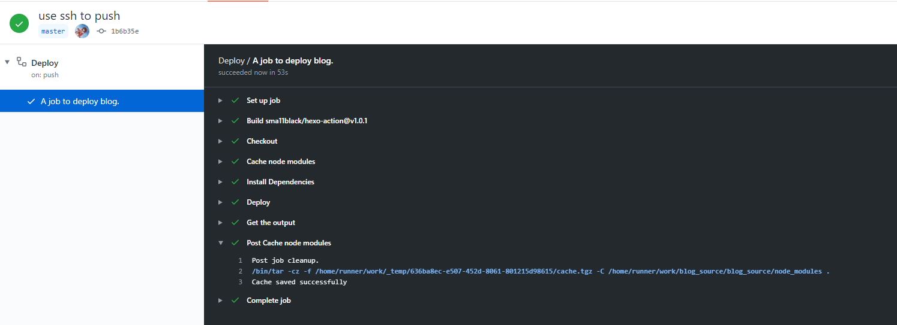

起因
一直以来，我的博客都是通过hexo本地生成，生成文件上传Github，服务器pull的方式进行部署的。这么久都没遇到什么太大的问题，博客的相关源代码也都放在了我的文档里。然在2019年10月的时候，我的Surface Book出现了屏幕和底座接触不良的情况，USB和键盘经常失去响应。考虑到保修即将在12月份失效，因此选择了送修。
在备份数据的时候，我精心备份了所有的游戏，照片和代码，却唯独跳过了“我的文档”。感谢QQ等软件把自己的数据放到我的文档里面（日你大坝），给我留下了“我的文档就是个存放软件数据的目录，没什么无关紧要的东西”这种错误印象。“不会真的有人把文档放到我的文档吧？不会吧，不会吧？”我这么想着，在仔细观察了一下我的文档的目录后只备份了一些游戏的存档后就送修了。
然而，事实证明真的有人把东西放到“我的文档”，而且这个人就是我。天知道我在哪天整理文件的时候鬼迷心窍地把博客的源代码放到了“我的文档”。对于巨硬这种公司来说，送修自然意味着数据丢失。事实上我不但丢失了所有数据，连原有的划痕都被一并“修复”了，很大概率巨硬是直接给我换了一台设备，找回数据就是做梦。（另外本次送修还导致我更换了ssh私钥，错过了某加密货币的drop，直接损失
说来惭愧，在送修之后我就再也没有抽出时间写博客，因此我竟然没有第一时间发现这一事情。直到今年2月在Telegram和群友吹b的时候突然想起来，才突然发现自己的博客已经GG了。由于重新整理非常费时费力，因此直到这几天才腾出时间来整理。
防范措施
为了避免重蹈覆辙，最好的方法就是直接把源代码传到Git上，正好Github Action发布后还没用过（一直以来都在用Gitlab pipeline)，就来试试用Github Action来部署吧。
首先生成一个Deply key
1 | ssh-keygen -t rsa -C "823805669hehe@gmail.com" |
对于这种需求，当然不是只有我一个人，大家都喜欢薅微软的羊毛，这里已经有一个库了sma11black/hexo-action
添加到相应的编译后仓库里，在源代码文件夹里面新增action.yml:
1 | name: Deploy # workflow name |
接下来push上去看看效果吧：
1 | fatal: could not read Username for 'https://github.com': No such device or address |
???这是什么问题？检查再三,我也确认我的确填写了这一字段，最终我找到了这个issue，其大意大概就是得用SSH的方式登录，行吧。修改_config.yml如下：
1 | deploy: |
再次push上去看看：

成功！
结语
我在Libuv初探一文曾经写道：
在生活中，有很多事情不是不能做，只是需要一个契机。有了这个契机，我就能有足够的动力去完成之。
这次的博客丢失，也算是一次契机吧！第一次使用了Github Actions，同时也避免了数据的再次丢失，总的来说还是可喜可贺。接下来的就等一个Codespaces正式上线吧，以后连本地都不需要留存博客代码了，真正把hexo用成wordpress（笑）
では、諸君は。